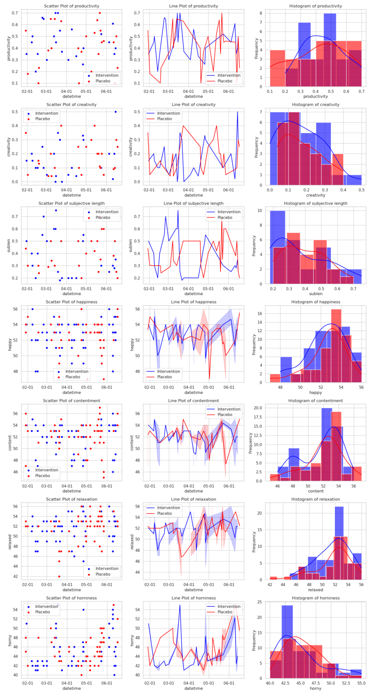
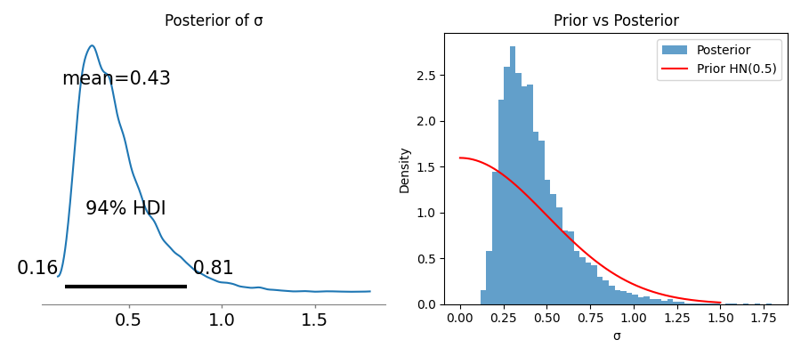

author: niplav, created: 2023-01-04, modified: 2025-08-22, language: english, status: in progress, importance: 7, confidence: certain
There are too many possible quantified self experiments to run. Do hobbyist prediction platforms1 make priorisation easier? I test this by setting up multiple markets, in order to run two experiments (the best one, and a random one), mostly for the effects of various nootropics on absorption in meditation. The first experiment (testing the Pomodoro method) results in a log score of -0.326 for the market, the second experiment (testing Vitamin D₃) results in a log score of -0.333 — pretty good.
dynomight 2022 has a very cool proposal:
Oh, and by the way are you THE NSF or DARPA or THE NIH or A BILLIONAIRE WHO WANTS TO SPEND LOTS OF MONEY AND BRAG ABOUT HOW YOU ADVANCED THE STATE OF HUMAN KNOWLEDGE MORE THAN ALL THOSE OTHER LAME BILLIONAIRES WHO WOULDN’T KNOW A HIGH ROI IF IT HIT THEM IN THE FACE? Well how about this:
- Gather proposals for a hundred RCTs that would each be really expensive but also really awesome. (E.g. you could investigate
SALT → MORTALITYorALCOHOL → MORTALITYorUBI → HUMAN FLOURISHING.)- Fund highly liquid markets to predict the outcome of each of these RCTs, conditional on them being funded.
- If you have hangups about prison, you might want to chat with the CFTC before doing this.
- Randomly pick 5% of the proposed projects, fund them as written, and pay off the investors who correctly predicted what would happen.
- Take the other 95% of the proposed projects, give the investors their money back, and use the SWEET PREDICTIVE KNOWLEDGE to pick another 10% of the RCTs to fund for STAGGERING SCIENTIFIC PROGRESS and MAXIMAL STATUS ENHANCEMENT.
—dynomight, “Prediction market does not imply causation”, 2022
Well, I'm neither a billionaire nor the NSF or DARPA, but I have run two shitty self-blinded RCTs on myself already, and I'm certainly not afraid of the CFTC. And indeed I don't have a shortage of ideas on things I could run RCTs on, but the time is scarce (I try to collect m=50 samples in each RCT, which (with buffer-days off) is usually more than 2 months of data collection).
So I'll do what @saulmunn pointed out to me is a possibility: I'm going to do futarchy (on) myself by setting up a set of markets of Manifold Markets with respect to the outcomes of some pre-specified self-blinded RCTs, waiting until the prices on them equilibriate, and then running two of those RCTs (the "best" one, by my standards, and a random one) and using the results as resolutions, while resolving the others as ambiguous.
If the markets receive enough liquidity, I'll start the first experiment early in 2024, and the second one sometime in 2024 (depending on the exact experiment), hopefully finishing both before 2025.
Some experiments can be self-blinded, especially ones that involve substances, others can not because they require me to engage in an activity or receive some sensory input, so I distinguish the two, and will slightly prioritise the experiments that can be blinded.
In all experiments, I will be using the statistical method detailed here, code for it here, unless someone points out that I'm doing my statistics wrong.
I will be scoring the markets based on the variables specified in the prediction market title, but I'll of course be collecting a lot of other data during that time that will also be analyzed.
| Experiment | Number of Traders | Trading Volume | Expected Effect Size | Resolved Effect Size |
|---|---|---|---|---|
| L-Theanine + Caffeine vs. Sugar → Meditative Absorption | 14 | M̶515 | 0.306 | |
| Nicotine vs. Normal chewing gum → Meditative Absorption | 7 | M̶342 | 0.437 | |
| Modafinil vs. Sugar → Meditative Absorption | 11 | M̶668 | 0.337 | |
| Vitamin D vs. Sugar → Meditative Absorption | 11 | M̶675 | 0.169 | -0.14 |
| Vitamin B12 vs. Sugar → Meditative Absorption | 7 | M̶303 | 0.182 | |
| LSD Microdosing vs. Water → Meditative Absorption | 6 | M̶174 | 0.286 | |
| CBD Oil vs. Similar-Tasting Oil → Meditative Absorption | 9 | M̶210 | 0.227 | |
| L-Phenylalanine vs. Sugar → Meditative Absorption | 7 | M̶269 | 0.302 | |
| Bupropion vs. Sugar → Happiness | 8 | M̶303 | 0.337 | |
| THC Oil vs. Similar-Tasting Oil → Meditative Absorption | 10 | M̶230 | 0.344 | |
| Intermittent Fasting vs. Normal Diet → Happiness | 13 | M̶228 | 0.348 | |
| Pomodoro Method vs. Nothing → Productivity | 9 | M̶300 | 0.397 | 0.26 |
| Bright Light vs. Normal Light → Happiness | 9 | M̶104 | 0.473 | |
| Meditation vs. No Meditation → Sleep duration | 13 | M̶380 | 0.241 |
In general, by meditative absorption I mean the concentration/tranquility (in Buddhist terms samatha) during a ≥30 minute meditation session in the morning, ~45 minutes after waking up and taking the substance (less if the substance starts working immediately). I will be doing at least 15 minutes of anapanasati during that meditation session, but might start (or end) with another practice).
Past meditation data can be found here.
0.06*1+0.14*0.8+0.26*0.4+0.3*0.1+0.2*0=0.3060.1*1+0.25*0.8+0.28*0.4+0.25*0.1+0.11*0=0.4370.03*1+0.2*0.8+0.29*0.4+0.31*0.1+0.18*0=0.3370.04*1+0.06*0.8+0.1*0.4+0.41*0.1+0.38*0=0.1690.03*1+0.09*0.8+0.1*0.4+0.4*0.1+0.38*0=0.1820.06*1+0.14*0.8+0.21*0.4+0.3*0.1+0.29*0=0.2860.04*1+0.1*0.8+0.18*0.4+0.35*0.1+0.35*0=0.2270.06*1+0.16*0.8+0.2*0.4+0.34*0.1+0.23*0=0.3020.05*1+0.19*0.8+0.27*0.4+0.27*0.1+0.22*0=0.3370.07*1+0.18*0.8+0.27*0.4+0.22*0.1+0.26*0=0.344Some experiments can't be blinded, but they can still be randomized. I will focus on experiments that can be blinded, but don't want to exclude the wider space of interventions.
echo -e "fast\ndon't fast" | shuf | tail -1. Expected duration of the trial: ~2 months.
0.03*1+0.18*0.8+0.36*0.4+0.3*0.1+0.13*0=0.348echo -e "pomodoro\nno pomodoro" | shuf | tail -1. Expected duration of trial: 2 months.
0.07*1+0.19*0.8+0.39*0.4+0.29*0.1+0.06*0=0.397echo -e "lamp\nno lamp" | shuf | tail -1. Expected duration of trial: 4 months, as I often don't spend all my day at home.
0.11*1+0.29*0.8+0.27*0.4+0.23*0.1+0.1*0=0.473echo -e "meditation\nno meditation" | shuf | tail -1. Expected duration of trial: 5 months, as I might not always find a 2-day interval in which I'm sure I can meditative 2h/day.
0.04*1+0.08*0.8+0.21*0.4+0.53*0.1+0.15*0=0.241I have a couple more ideas on possible experiments that I could run, and will put them up as I acquire more mana. I might also just farm highly-rated but rarely-investigated methods from troof 2022 and experiences reported here.
Blindeable:
Not blindeable:
This little exercise may need your participation! I have three pleas to you, dear reader:
Other than that, I also welcome all critiques at any level of detail of this undertaking.
If I could create more markets, I might be able to put up markets on different variables I measure during the day. That way, I could select interventions that dominate others across multiple dimensions.
If there were prediction platforms that supported them, combinatorial prediction markets or latent-variable prediction markets could be incredibly cool, but we don't live in that world (yet).
On 2024-01-25, I decided to select the experiment.
seq 1 14 | shuf | tail -1 output 12, which corresponds
to the experiment Pomodoro Method vs. Nothing →
Productivity.
The market with the highest expected effect size is Bright Light vs. Normal Light → Happiness, so those are the two experiments I am going to run.
I am a bit weary of selecting these two markets: The Bright Light market has the lowest trading volume of all markets, at only M̶104, and both these markets are not blindeable.
But a commitment I have made, so a commitment I have to follow through with.
| Value tracked | Effect size d (λ, p, σ change, k) |
|---|---|
| Productivity | 0.26 (λ≈5.41, p≈0.117, -0.04, 54) |
| Creativity | -0.13 (λ≈0.51, p≈0.93, 0.01, 54) |
| Subjective length | -0.14 (λ≈4.1, p≈0.256, 0.04, 54) |
| Happiness | -0.07 (λ≈0.32, p≈0.96, 0.01, 111) |
| Contentment | -0.13 (λ≈1.08, p≈0.83, 0.05, 111) |
| Relaxation | -0.04 (λ≈1.23, p≈0.8, -0.25, 111) |
| Horniness | -0.14 (λ≈7.76, p≈0.02, 0.74, 111) |

I ran the experiment from 2024-01-29 to 2024-06-17, using spt with this script, managed by this script.
The data on whether a particular day was a pomodoro-method day was saved in this file, and the data on the pomodoros was saved in this file.
The code for loading and transforming the pomodoro data isn't particularly interesting, if you're curious you can find it in this file.
datasets=get_datasets_pom()
Let's proceed to the analysis, then (using the same methodology as for my nootropics experiments:
res=analyze(datasets)
And the results are:
>>> res
productivity creativity sublen happy content relaxed horny
d 0.257836 -0.130323 -0.140056 -0.073699 -0.132798 -0.038319 -0.144040
λ 5.413354 0.508335 4.058103 0.318865 1.078502 1.232905 7.756272
p 0.117179 0.930744 0.256304 0.959552 0.827240 0.795999 0.022903
dσ -0.044201 0.006098 0.037463 0.007177 0.047723 -0.252365 0.744675
k 54.000000 54.000000 54.000000 111.000000 111.000000 111.000000 111.000000
I didn't meditate or do flashcards during that time.
So the pomodoro method somewhat increases productivity (at the edge of statistical significance), and maybe decreases subjective length of the day a bit. It also decreases horniness a little bit, which I find pretty funny2.
The Vitamin D₃ experiment finished successfully with full data collection, with an effect size of ≈-0.137 of Vitamin D₃ on absorption (more at the link).
I can now score the market with the results from the two experiments:
import numpy as np
def logscore(o,p):
return np.mean(o*np.log(p)+(np.ones_like(o)-o)*np.log(np.ones_like(p)-p))
pomodoro_p=np.array([0.06, 0.29, 0.39, 0.19, 0.07])
pomodoro_o=np.array([0, 0, 1, 0, 0])
logscore(pomodoro_o, pomodoro_p)
-0.3258531953347593
vitamin_p=np.array([0.39, 0.41, 0.08, 0.06, 0.05])
vitamin_o=np.array([1, 0, 0, 0, 0])
logscore(vitamin_o, vitamin_p)
-0.3331583177971012
Honestly: The markets did pretty well.
So, I put up some prediction markets on the results of quantified self RCTs. I ran two of the experiments, and scored both markets on the results.
How much should the performance of the market change our opinion about the viability of using prediction platforms to predict RCTs, and thus be plausibly useful in selecting experiments to run and actions to perform?
One issue here is that we only observed two datapoints: Two logscores from the markets on the Pomodoro method (-0.326) and the Vitamin D₃ experiment (-0.333). Qualitatively these are already fairly assuring because they're both far better than a random score of -0.69. But if we want to quantify the amount of information we've gained, we can do that by performing a Bayesian update.
For that, we need a prior. What prior to choose? I tried fiddling around a bit with the exponential distribution, which is the maximum entropy distribution over possible logscores, only nailed down by the mean of the distribution. It represents a state of minimal knowledge.
There's also the Gamma distribution which is great because it's a conjugate prior assuming an exponentially distributed underlying data generating process. So, after updating on the datapoints we again get a Gamma-distribution as the posterior.
But I didn't go with that one because… I wasn't getting the pretty results I wanted3.
With the exponential distribution, a thing that happened was that I'd calculate the resulting distribution after two updates, but the first update would be very aggressive and the second update would then update away harder than the first update had updated towards the datapoints, causing a net information loss. The exponential distribution also has very long tails, resulting in a median of -1.0, which implies that the median market has a logscore that is worse than chance. I don't believe that to be the case. (The maxent mean implies that the mean market is only as good as chance, which I also wouldn't believe a priori? I think?)
As for using the Gamma distribution as a prior, I simply don't think that the underlying data generating process is exponentially distributed, and thus we don't get any advantage through conjugacy. The Gamma distribution also has two parameters, which is too much to be nailed down with only two datapoints.
So I decided to pick a different prior, and landed on the half normal
distribution
with half-normally distributed variance (σ ~ HalfNormal(0.5)), which
has some nicer properties than the exponential distribution, especially
with its thin tails. But the half normal distribution can't be updated
in a closed-form solution, so instead I had to write a short script
using pymc. Because of missing
conjugacy the resulting distribution is not a half-normal distribution,
but something a lot more complicated. I can't be bothered to try to
calculate what it even is.
Summary visualization of the update:

The script4 initializes the model with the
half normal prior, which in turn has a standard
deviation distributed
with HalfNormal("sigma", sigma=0.5). We then update on observed=[0.326,
0.333]:
with pm.Model() as adaptive_model:
σ = pm.HalfNormal('sigma', sigma=0.5)
obs = pm.HalfNormal('distances', sigma=σ, observed=distances)
trace = pm.sample(2000, tune=1000, chains=4, target_accept=0.95,
return_inferencedata=True)
We can then observe the samples for the new standard deviation
σ_samples = trace.posterior.sigma.values.flatten()
σ_mean = np.mean(σ_samples)
and calculate the log-likelihoods, the Bayes factor, and the number of bits in the update:
results = {}
null_σ = null_sigmas[0]
ll_adaptive = np.sum(stats.halfnorm.logpdf(distances, scale=σ_mean))
ll_null = np.sum(stats.halfnorm.logpdf(distances, scale=null_σ))
log_bf = ll_adaptive - ll_null
bits = log_bf / np.log(2)
bf = np.exp(log_bf)
The whole script has this output:
Initializing NUTS using jitter+adapt_diag...
Multiprocess sampling (4 chains in 2 jobs)
NUTS: [sigma]
Progress Draws Divergences Step size Grad evals Sampling Speed Elapsed Remaining
─────────────────────────────────────────────────────────────────────────────────────────────────────────────────────────────────
━━━━━━━━━━━━━━━━━━━━━━━━━━━━━━━━━━━━━━━━ 3000 0 0.69 1 1165.53 draws/s 0:00:02 0:00:00
━━━━━━━━━━━━━━━━━━━━━━━━━━━━━━━━━━━━━━━━ 3000 0 1.12 3 1135.09 draws/s 0:00:02 0:00:00
━━━━━━━━━━━━━━━━━━━━━━━━━━━━━━━━━━━━━━━━ 3000 0 0.48 1 600.10 draws/s 0:00:04 0:00:00
━━━━━━━━━━━━━━━━━━━━━━━━━━━━━━━━━━━━━━━━ 3000 0 0.78 1 566.57 draws/s 0:00:05 0:00:00
Sampling 4 chains for 1_000 tune and 2_000 draw iterations (4_000 + 8_000 draws total) took 5 seconds.
Posterior summary:
mean sd hdi_3% hdi_97% mcse_mean mcse_sd ess_bulk ess_tail r_hat
sigma 0.434 0.199 0.156 0.811 0.004 0.004 2582.0 2939.0 1.0
Posterior mean σ: 0.434
vs Null σ = 0.7:
Log likelihood (adaptive): 0.642
Log likelihood (null): 0.040
Evidence: 0.87 bits
Bayes factor: 1.8:1 in favor of adaptive
Posterior mean σ: 0.434
95% credible interval: [0.156, 0.844]
Evidence: 0.868 bits
(vs null hypothesis σ = 0.7)
Thus: 0.868 bits in favor of futarchy5.
Many thanks to clippy (twitter) for M̶500, and Tetraspace (twitter) for M̶1000, which I used to subsidize the markets. Also many thanks to the manifold admin Genzy for subsidizing each market with M̶450.
Your funding of the sciences is greatly appreciated.
My gratitude also goes out to all the traders on the markets. You help me prioritize, you help us gain knowledge.
Over time, I'll put some explanations on why these specific experiments interest me. Not yet fully, though.
My l-theanine experiment gave disappointing results, but people have (rightfully) pointed out that l-theanine is best taken together with caffeine: one gets energy and relaxation at the same time.
This points at a broader possibility: Why not set up markets for all possible combinations of nootropics? But alas, this runs into problems with combinatorial explosion.
Vitamin D seems just generally great, so it's not super far out to suspect that supplementing it after waking up could have positive effects on wakefulness.
Inspired by Gwern 2019.
My brother, in conversation, brought up that smoking weed is incredibly relaxing to him, and told me he imagines that this is what he thinks deep meditative states feel like. That intrigues me enough to consider it as intervention towards absorption, if not mindfulness (albeit one that has the danger of creating subtly dull states of mind).
The Pomodoro technique also uses the concept of rhythm, breaking up the day into twenty-five-minute segments of work and five minutes of a break. Interestingly, though, I found no academic study that tested the technique.
—Gloria Mark, “Attention Span” p. 66, 2023
It'd be cool if I were the first person to actually test this widespread technique.
See also:
I find it odd to call any platform on which people functionally give probabilities, but without staking real money, "prediction markets". Neither Metaculus not Manifold Markets are prediction markets, but PredictIt and Kalshi are. ↩
p<0.05, after all. (Don't pay any attention to the Bonferroni correction lurking over there, it's not important.) ↩
This is very bad statistical practice. I'm doing this because I want a cutesy title with a positive number of of bits as an update, and because I wanted to learn how to do Bayesian updating using computers. ↩
Code here. Thanks to Claude 4 Sonnet for writing the code and walking me through the process. ↩
Under several favorably cherry-picked assumptions. Don't @ me. ↩